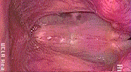

Phonetics stuff
X-ray films
These are x-ray films of vocal tracts making various odd declarations, all from the X-Ray Database page at the Queen’s University Speech Perception and Production Laboratory. (These are links to the QuickTime versions; other formats are available on the original website.)
- An anonymous 38-year-old male vocal tract asks the age-old question ‘Why did Ken set the soggy net on top of his deck?’. (There does not appear to be an x-ray film of Ken’s vocal tract explaining his soggy-net-placement decisions, unfortunately.)
- The anonymous 38-year-old male vocal tract says a variety of other things, too. You can watch the full recording.
- An anonymous 26-year-old male vocal tract says: ‘It’s ten below outside’. (Meteorologically shocking revelation: this was recorded in Quebec.)
- An anonymous female vocal tract of unknown age announces in Canadian French that ‘Le boulanger but onze bières’ (‘The baker drank eleven beers’).
Vocal folds
This is what vibrating vocal folds look like (in slow motion):

This is from the UCLA Phonetics Lab demos and illustrations page.
Elaborate multimedia thing
You might want to play with this multimedia dingus about the phonetics of English from the University of Iowa. There are IPA symbols bouncing around, animations of various sounds being articulated, and videos of a very earnest-looking person—whose insides you are not forced to look at—making those sounds.
A warning, though: The terminology it uses varies slightly from what we’ve been using in class. The main difference is that all places of articulation in which the tongue is the active articulator (the chunk of meat that’s moving) are prefixed with lingua-. I don’t know why this site in particular has this apparent tongue fixation, but this illustrates a more general fact: there is variation in phonetic terminology. Even apart from that, the same sound might be characterized in different ways depending on what is relevant in a particular context. For example, one might call attention to the fact that English [t] is made with the blade of the tongue by using the term ‘laminal’, and describing this sound as a ‘laminal voiceless alveolar stop’.
(There is also a Spanish version of this site. You probably shouldn’t look at it, though, until you’re relatively confident of your grasp of the basics of the phonetics of English.)
Full IPA chart
Here is the chart that reflects all the standard symbols in the IPA. Definitely don’t look at this unless you have a handle on what we’re doing in class. This version is actually clickable, so you can hear examples of various sounds.